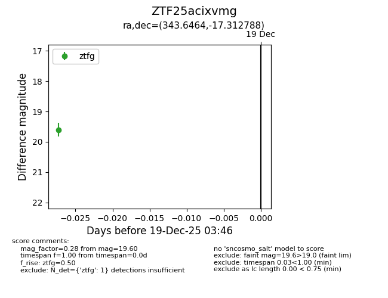
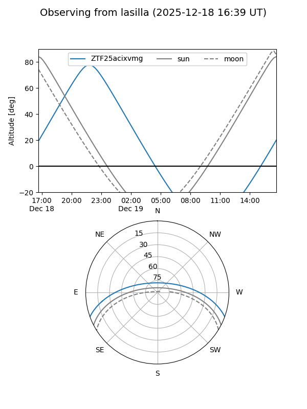
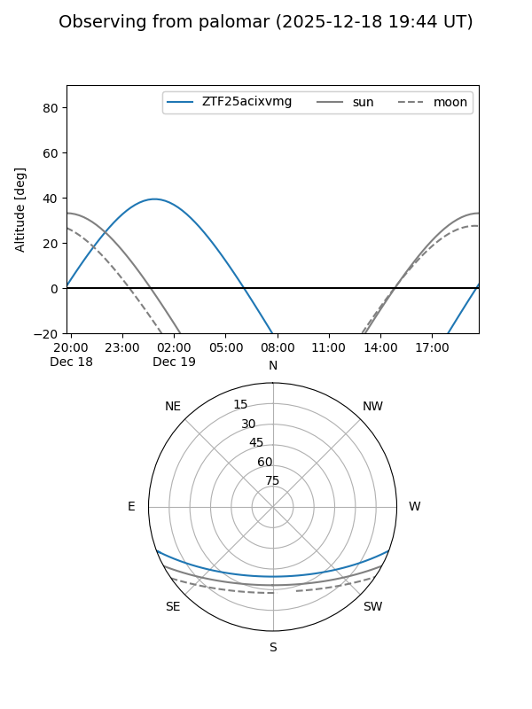

ZTF25acixvmg
Target ZTF25acixvmg at 2025-12-19 03:47
Aliases and brokers:
FINK: fink-portal.org/ZTF25acixvmg
Lasair: lasair-ztf.lsst.ac.uk/objects/ZTF25acixvmg
ALeRCE: alerce.online/object/ZTF25acixvmg
alt names
ZTF25acixvmg (ztf,fink_ztf)
Coordinates:
equatorial (ra, dec) = 343.6464,-17.31279
equatorial (HMS+DMS) = 22:54:35.13,-17:18:46.04
galactic (l, b) = (46.8083,-61.31755)
Flags:
Photometry:
last ztfg=19.60
1 ztfg detections
Lightcurve

Visibility


Additional plots